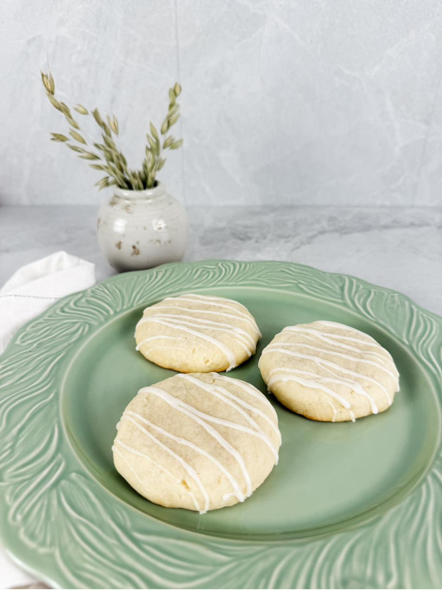
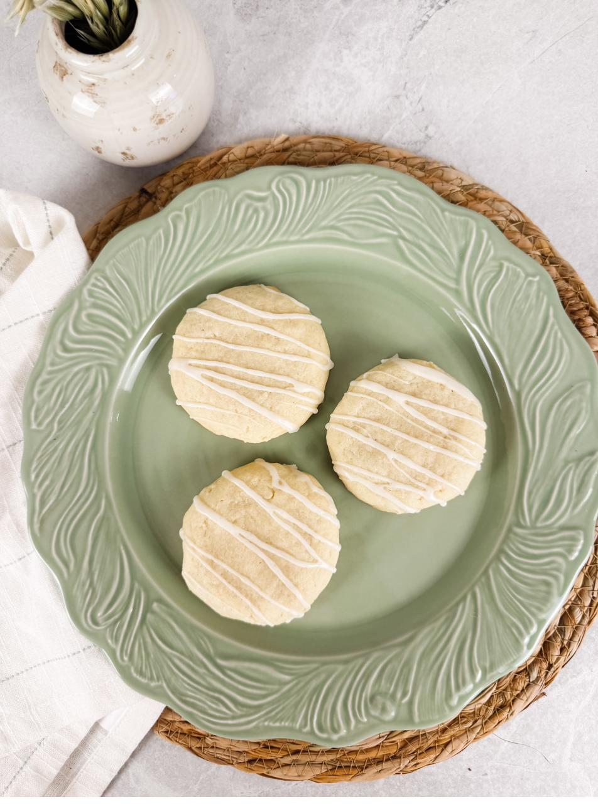

Pale on top, soft in the middle, finished with a thin vanilla glaze.

Vanilla bean paste rather than extract, and it is worth the difference. Paste carries the seeds, which means you can see the vanilla in both the dough and the glaze — small dark flecks scattered through something otherwise plain. The quarter teaspoon of almond extract does something harder to describe. On its own it would be obvious. At that amount it simply makes the vanilla taste more like itself.
Pull them while the tops are still pale. A sugar cookie that browns is a sugar cookie that has gone slightly crisp, and the whole point of this one is the soft center.
The dough
The glaze
The melted butter in the glaze is what keeps it from tasting like plain sugar. It also sets to a soft sheen rather than a hard shell, so the cookies stay tender underneath.

To freeze: arrange the shaped, unbaked cookies on a parchment-lined tray and freeze until firm, 1–2 hours, then transfer to a bag or container with parchment between the layers. They keep two months. Bake straight from frozen at 350°F, adding a minute or two. Never glaze before freezing.
For a party: shape and freeze the dough ahead, bake from frozen the day before, glaze once the cookies are completely cool, and let them set fully. Stored airtight at cool room temperature overnight, the centers stay soft and the finish stays clean.
“Pull them while the tops still look underdone. They finish on the pan, and they keep their softness that way.”